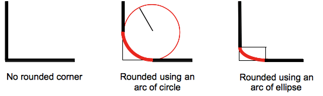
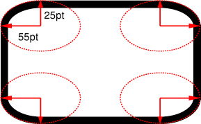
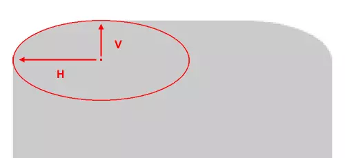

You’re probably thinking: “Hah, such silly question, border-radius is for rounding divs corners, what else?”
Hmmm but have you ever thought, what does 18px or 50% really mean when they get passed to border-radius property?
border-radius is actually a shorthand property for four others CSS properties. So when you write:
border-radius: 18px;
You are really writing:
border-top-left-radius: 18px;
border-top-right-radius: 18px;
border-bottom-left-radius: 18px;
border-bottom-right-radius: 18px;
These four properties represent four corners of an element box (top left, top right, bottom left and bottom right), and the browser relies on those values to draw a curve (an arc really) that connect two edges of each corner. How? The answer lies in the name radius.
In order to draw the arc, the browser will use the border-radius value to calculate the x, y coordinate of the center of a circle (relative to the position of the corner) using this formula:
x_circle = x_div_corner + border_radius (or -border_radius if it's the right edge)
y_circle = y_div_corner + border_radius (or -border_radius if it's the bottom edge)
Then it will draw an arc using the above coordinate, plus some extra stuff such as depending on whether it’s a corner on top or bottom, left or right the arc should be clockwise or anti-clockwise, etc.

That’s why when border-radius is 50% and your element box have width and height equal each other (making a square), the browser will draw arcs from a position of 50% width and 50% height, which is at the center of the square, therefore create a perfect circle.
Although border-radius doesn’t accept value that is less than 0 so you can’t use negative number to make the corners “curve in” .
But border-radius actually accepts up to two values:
border-top-left-radius: 10px 20px;
This is because the border-radius arc doesn’t have to be an arc of a circle but can also be an arc of an ellipse, therefore, you can use two different values for the vertical and horizontal radius.


Now go do weird things with it!
Read More:
border-radiusspec: https://drafts.csswg.org/css-backgrounds/#border-radiusborder-radiuson CSS almanac: https://css-tricks.com/almanac/properties/b/border-radius/- Forward slash in
border-radius: https://www.sitepoint.com/setting-css3-border-radius-with-slash-syntax/